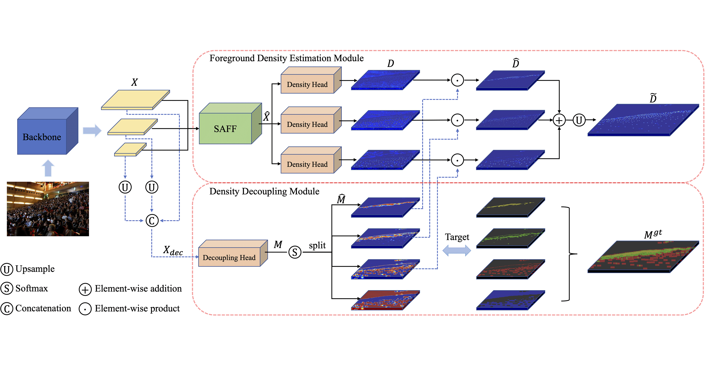

Tianliang ZhangResearcher in Computer Vision3i Lab in 3irobotix
|
|
Biography
I am an engineer at 3irobotix, actively involved in research within the realms of computer vision and robotics. In 2020, I successfully attained my Ph.D. degree in Signal and Information Processing from the School of Electronic, Electrical and Communication Engineering at University of Chinese Academy of Sciences, under the esteemed guidance of Prof. Qixiang Ye. Prior to that, in 2017, I obtained my Master's Degree from PRISDL, School of Engineering Science, University of Chinese Academy of Sciences, where I had the privilege of being advised by Prof. Qixiang Ye. Furthermore, I completed my B.Eng. degree in 2013 from Wuhan University of Technology (WUT), under the guidance of Prof. Qingsong Ai.
From 2020 to March 2023, I had the privilege of working at Tencent Youtu Lab as a computer vision researcher. During my tenure, I dedicated myself to the implementation of industrial AI-related projects and conducted extensive algorithm research in the field.
My research interests primarily revolve around computer vision and machine learning, with specific focus on self-learning, pedestrian detection, and visual object detection.
News
- May. 2022: One paper HDNet is accepted by IEEE ICME 2022
- Nov. 2021: Winner of LVIS Challenge Workshop (ICCV 2021) and "most innovative" award
- Dec. 2020: One paper FC-Net is accepted by IEEE ITS 2020
- Jul. 2020: Pollyanna Chu Outstanding Doctoral Scholarship
- Feb. 2020: One paper is accepted by CVPR 2020
Publications
| Jiawei Zhan, Jun Liu, Wei Tang, Guannan Jiang, Xi Wang, Bin-Bin Gao, Tianliang Zhang, Wenlong Wu, Wei Zhang, Chengjie Wang, Yuan Xie
Global Meets Local: Effective Multi-Label Image Classification via Category-Aware Weak Supervision Proceedings of the 30th ACM International Conference on Multimedia, 2022 [PDF] |
|
|  | Chenliang Gu, Changan Wang, BinBin Gao, Jun Liu, Tianliang Zhang*
HDNet: A Hierarchically Decoupled Network for Crowd Counting IEEE International Conference on Multimedia and Expo (ICME), 2022 * Corresponding Author [PDF][arXiv] |
| WeiFu Fu, CongChong Nie, Ting Sun, Jun Liu, TianLiang Zhang, Yong Liu
LVIS Challenge Track Technical Report 1st Place Solution: Distribution Balanced and Boundary Refinement for Large Vocabulary Instance Segmentation LVIS Challenge Workshop @ ICCV 2021 [PDF] |
|
| Tianliang Zhang, Qixiang Ye, Baochang Zhang, Jianzhuang Liu, Xiaopeng Zhang, Qi Tian
Feature Calibration Network for Occluded Pedestrian Detection IEEE Transactions on Intelligent Transportation Systems (ITS), 2020 [PDF][arXiv] |
|
| Wei Ke*, Tianliang Zhang*, Zeyi Huang, Qixiang Ye, Jianzhuang Liu, Dong Huang
Multiple Anchor Learning for Visual Object Detection IEEE Conference on Computer Vision and Pattern Recognition (CVPR), Seattle, USA, 2020 * Equal Contribution [PDF] |
|
 |
Tianliang Zhang, Zhenjun Han, Huijuan Xu, Baochang Zhang, Qixiang Ye
CircleNet: Reciprocating Feature Adaptation for Robust Pedestrian Detection IEEE Transactions on Intelligent Transportation Systems (ITS), 2019 [PDF][arXiv] |
| Qixiang Ye (Ph.D. Advisor), Tianliang Zhang, Wei Ke
Progressive Latent Models for Self-learning Scene-specific Pedestrian Detectors IEEE Transactions on Intelligent Transportation Systems (ITS), 2019 [PDF] |
|
| Qixiang Ye (Ph.D. Advisor), Tianliang Zhang, Wei Ke, Qiang Qiu, Jie Chen, Guillermo Sapiro, Baochang Zhang
Self-learning Scene-specific Pedestrian Detectors using a Progressive Latent Model IEEE Conference on Computer Vision and Pattern Recognition (CVPR), Honolulu, USA, 2017 [PDF] |
|
| Wei Ke, Tianliang Zhang, Jie Chen, Fang Wan, Qixiang Ye, Zhenjun Han
Texture Complexity based Redundant Regions Ranking for Object Proposal IEEE Conference on Computer Vision and Pattern Recognition (CVPR) Workshop, Las Vegas, USA, 2016 [PDF] |